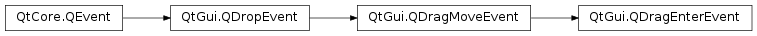

QDragEnterEvent¶
Detailed Description¶
The
PySide2.QtGui.QDragEnterEventclass provides an event which is sent to a widget when a drag and drop action enters it.A widget must accept this event in order to receive the
drag move eventsthat are sent while the drag and drop action is in progress. The drag enter event is always immediately followed by a drag move event.
PySide2.QtGui.QDragEnterEventinherits most of its functionality fromPySide2.QtGui.QDragMoveEvent, which in turn inherits most of its functionality fromPySide2.QtGui.QDropEvent.
-
class
PySide2.QtGui.QDragEnterEvent(pos, actions, data, buttons, modifiers)¶ Parameters: - data –
PySide2.QtCore.QMimeData - actions –
PySide2.QtCore.Qt.DropActions - pos –
PySide2.QtCore.QPoint - modifiers –
PySide2.QtCore.Qt.KeyboardModifiers - buttons –
PySide2.QtCore.Qt.MouseButtons
Constructs a
PySide2.QtGui.QDragEnterEventthat represents a drag entering a widget at the givenpointwith mouse and keyboard states specified bybuttonsandmodifiers.The drag data is passed as MIME-encoded information in
data, and the specifiedactionsdescribe the possible types of drag and drop operation that can be performed.Warning
Do not create a
PySide2.QtGui.QDragEnterEventyourself since these objects rely on Qt’s internal state.- data –
© 2018 The Qt Company Ltd. Documentation contributions included herein are the copyrights of their respective owners. The documentation provided herein is licensed under the terms of the GNU Free Documentation License version 1.3 as published by the Free Software Foundation. Qt and respective logos are trademarks of The Qt Company Ltd. in Finland and/or other countries worldwide. All other trademarks are property of their respective owners.